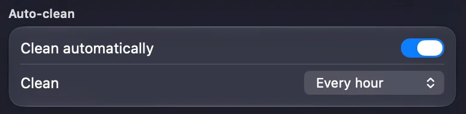
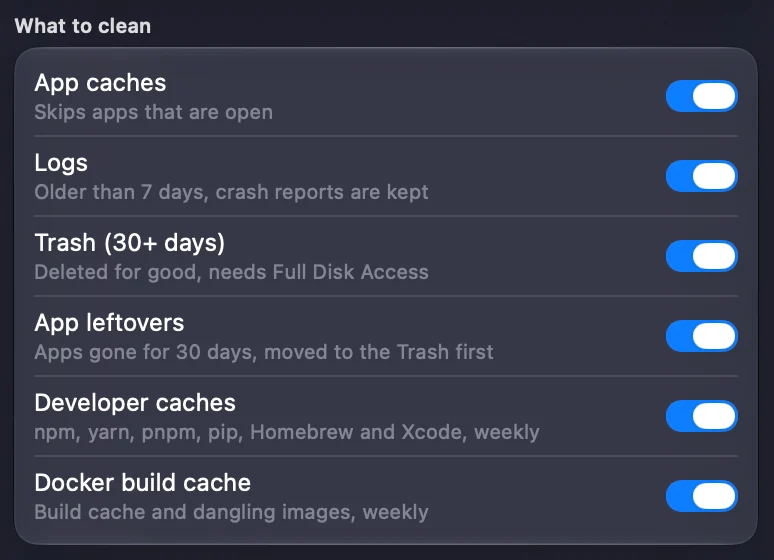
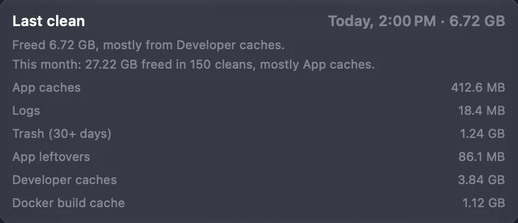
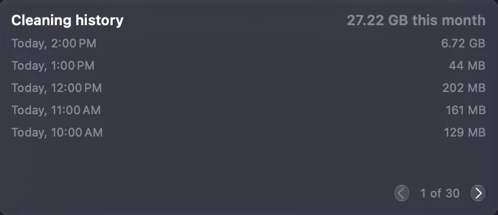

Nothing to
Lightly is a free Mac menu bar app that clears caches, logs and old Trash by itself, every hour.
 Sat 2:04 PM
Sat 2:04 PM

Would Lightly touch it?
Type any path from your Mac. The answer uses the same rules the app runs on.
First, it waits a full hour.
Nothing is cleaned at launch. The first clean comes one interval after you open Lightly, so you have time to set it up.
Then it checks what it may clear.
Each file goes through one gateway. Open apps, recent files and anything on your own keep list are left alone.
It clears the rest on its own.
Caches, old logs, old Trash and whatever deleted apps left behind. No window opens and nothing asks you to confirm.
Then it writes it all down.
Every clean is kept by date and size, so you can read what happened whenever you are curious.




- Waits
- Checks
- Clears
- Records
It stays out of sight.
No Dock icon, no main window
A small white ring in the menu bar is all you see. It opens at login, then runs in the background.

Catches up after sleep
If your Mac was asleep on the hour, the clean runs at the next wake. Pause it any time from Settings.

Dusty explains the rest
Ask what is using your disk. Dusty answers from measured facts, on your Mac, with Apple Intelligence.
Meet Dusty
You choose what goes
Switch off any category. Add any file or folder to Always kept and it is never cleaned.
All features
It never touches
- Documents,
- Desktop,
- Downloads,
- Photos,
- Music,
- Mail,
- Messages,
- iCloud Drive,
- keychains,
- browser profiles,
- system folders,
- external drives,
- or anything you keep.
The usual questions
Will it delete something I need?
It clears files your apps can make again, such as caches, plus logs and Trash past a set age. Your personal folders are refused outright. Cleaning is permanent, so read what it cleans before you install.
Can I undo a clean?
Only for app leftovers, which go to the Trash first. Everything else is deleted for good, with no confirmation.
Does it need my password?
No. Lightly never asks for an admin password. Full Disk Access is optional and only lets it clean the Trash.
Is it free?
Yes. Lightly is open source under the MIT license, with no account, no trial and no paid tier.
Does anything leave my Mac?
No. The app has no network code and no analytics. Dusty runs on Apple Intelligence on the Mac itself.
Why does macOS warn me when I open it?
This build is not notarized by Apple. Choose Open Anyway in Privacy & Security. The download page has the steps.
Press once.
Then never.
Free for macOS 27 on Apple Silicon. The first clean runs an hour after you open it.